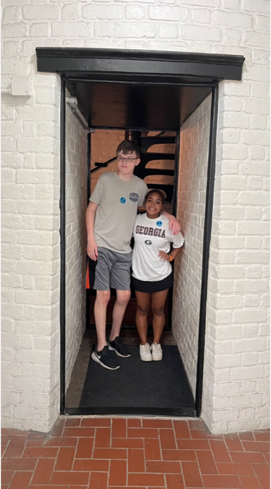

With my sister at the lighthouse at St Simon's island in Georgia
Introduction
Charles W. “Will” Scott
Personal Background: I achieved the rank of Eagle Scout a couple years ago in September. I’m planning to major in computer programming and have recently met a friend who hired me to program a couple sensors for one of his robotic helicopters. My favorite hobbies are video games, watching movies and youtube, and experimenting with personal projects with programming
Academic Background: I graduated from Myers Park high school this past February and was one of the few mid year graduates. This is my second year at CPCC.
Background in this Subject: I started learning HTML last fall (CTI110) and that’s what got me into programming. After that I wanted to start learning CSS so I started with WEB110 but in that class I also learned a little bit of Javascript so that’s what got me into this class
Primary Computer Platform: MacOS Ventura (Intel Macbook Air 2020)
Courses I'm Taking & Why:
Classes I've already taken:
BIO111 - General Biology: I was a little bit interested in biology when I was in high school so I wanted to learn more about it
PSY150 - General Psychology: I also studied some psychology in high school so I also wanted to learn more about that
MAT152 - Statistical Methods 1: For some reason I never learnt much about statistics in middle school or high school so I wanted to learn more about it
CTI110 - Web, Programming, and Database Foundations: I finally realized I wanted to start studying computers and programming
WEB110 - Web Development Fundamentals: When I first started taking CTI110 I realized I wanted to learn more about HTML and CSS
CIS110 - introduction to computers: I found that this was a required class for my major
CSC154 - Software Development: I wanted to learn more about software engineering
ENG111 - Writing and Inquiry: This is also a required class for my major
Classes I'm taking this semester:
ACA122 - College Transfer Success: It's required for most majors
CTI120 - Network and Security Foundations: Another class required for my major
WEB140 - Web Development Tools: Yet another major requirement